04 — The Experience
One journey. Two ways to get started.
BUSFLOW
Automatic
When location access is allowed, BusFlow detects the user's current location automatically.
Splash↓
GPS↓
Home
Manual
If location access isn't available, users can manually choose their departure location.
Splash↓
Manual Search↓
Home
"Location permission should never become a roadblock."

Splash

Manual Search

Home